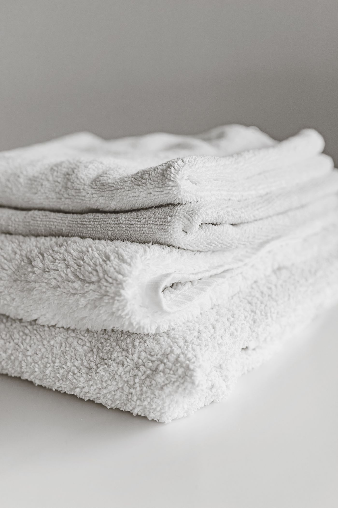
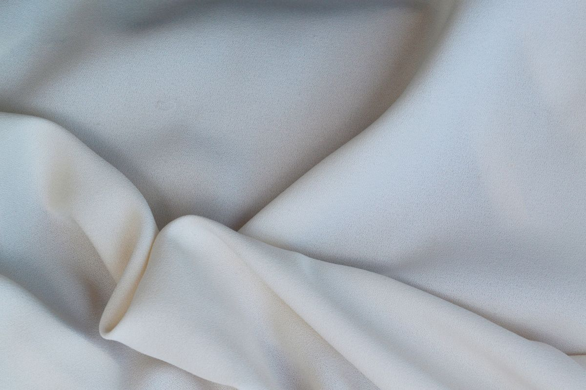

LAVANDERÍA
SALVI.
Un nombre para
tu próxima colada.

Tu lavandería,
en El Bosque.
La colada tiene
su lugar.
Salvi, en El Bosque.
Lavandería Salvi se encuentra en Calle Cádiz, 8, en El Bosque, Cádiz.
Si buscas una lavandería en el municipio, aquí tienes lo esencial para preparar tu visita: una dirección, el acceso al mapa y un teléfono para consultar lo que necesitas.
CONSULTAR SERVICIOSLavandería.
Así de claro.
Para saber qué servicio se ajusta a tu colada, habla directamente con Salvi.
SALVI
EL BOSQUE
Cuéntanos qué
necesitas lavar.
Consulta las prendas admitidas, las opciones disponibles y sus condiciones antes de acercarte. Así podrás organizar tu visita con la información adecuada.
CONSULTAR CON SALVILos servicios específicos, la modalidad de atención y las tarifas se consultan por teléfono.
Una llamada.
Los detalles, claros.
Abre cada consulta para preparar tu visita.
01 ¿Qué puedo llevar?
Indica el tipo de prenda o textil que quieres lavar. Consulta si se admite y qué condiciones de servicio se aplican.
Preguntar por mi colada ↗02 ¿Cuándo puedo ir?
Confirma el horario actual y la modalidad de servicio antes de desplazarte, especialmente si vienes desde fuera de El Bosque.
Consultar horario ↗03 ¿Qué precio tiene?
Pregunta por la tarifa correspondiente a lo que necesitas lavar y por las formas de pago disponibles.
Consultar tarifa y pago ↗
LAVANDERÍA SALVI
Calle Cádiz, 8
11670 El Bosque, CádizLa dirección, a un toque.
Abre Google Maps para preparar el recorrido.
Al otro lado,
Salvi.
Servicios, horario o una duda concreta.
Empieza por una llamada.